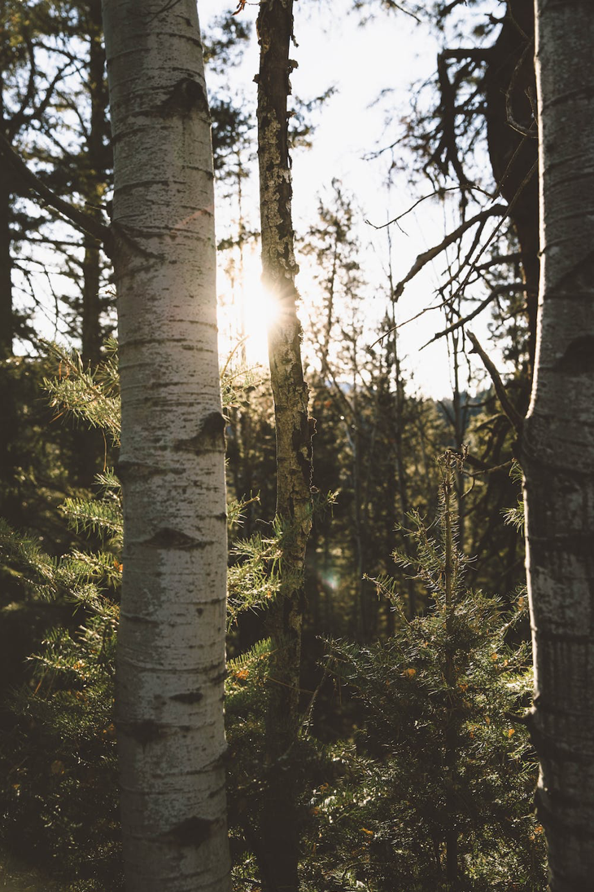

Home
Profile
About
Neighborhood
Heber City Utah

Local Restaurants
Spin Cafe
Back 40
Chicks Cafe
Parks
Deer Creek State Park
Jordanelle State Park
Request a Random Restaurant Recommendation:
Restaurant Generator